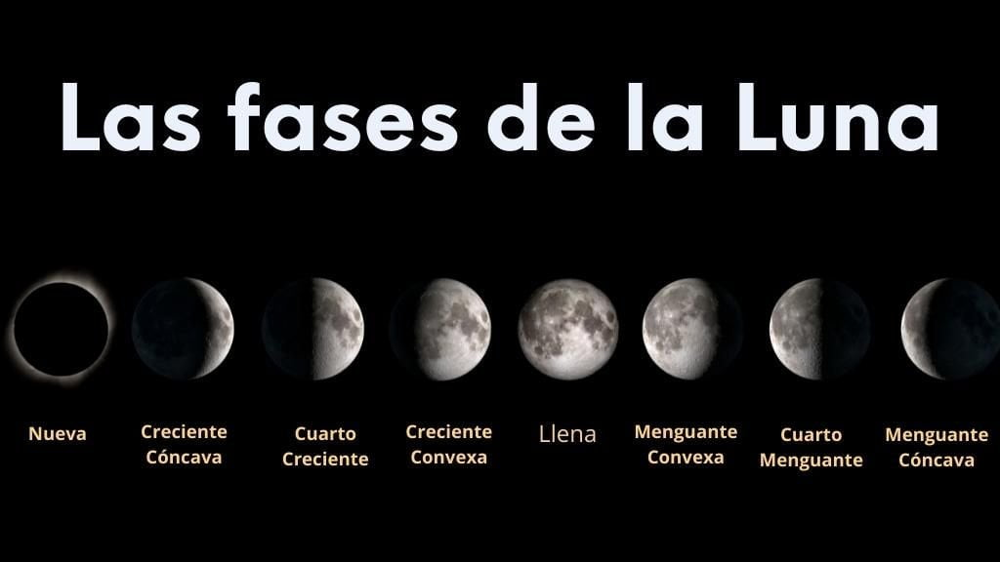

Las fases de la luna
Según la disposición de la Luna, la Tierra y el Sol, la cara visible
de la luna se ve iluminada de una mayor o menor porción.

| Fases de la luna |
| Luna nueva |
Cuarto creciente |
| Luna llena |
Cuarto menguante |
Sosa Fierros Jonnathan Ellian